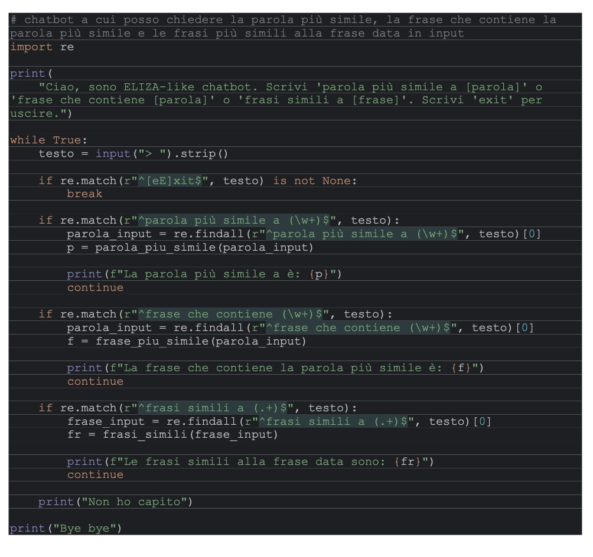

Nell’ultima fase del progetto ho implementato un chatbot, che integra al suo interno le funzioni sviluppate precedentemente. L’utente può interagire con il chatbot, che risponderà a seconda della richiesta:
- Può suggerire una parola semanticamente simile a quella fornita in input;
- Può restituire una o più frasi del testo che contengono parole con significato simile a quella inserita;
- Può restituire una o più frasi semanticamnete simili alla frase data in input.
Se viene inserita una richiesta non prevista, il chatbot risponde semplicemente con un messaggio che indica di non aver compreso ("Non ho capito").
Per terminare l’interazione, basta scrivere "exit", e il chatbot risponderà con un cordiale "bye bye".